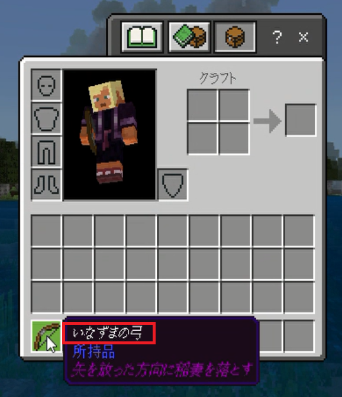
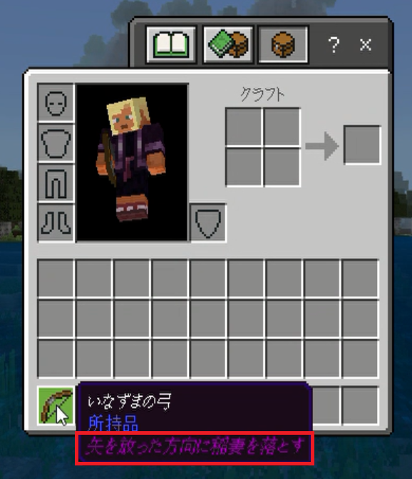

【基本の書き方】
はじめに
ルートテーブル（Loot Table）はアイテムのガチャ的要素が非常に強い定義ファイルです。
マインクラフト内ではチェストの中身やドロップアイテムのほか、釣りアイテムなどもガチャ要素として定義できますので、これらを定義するだけでもゲームとして成り立ってしまうような要素です。
ここでは本環境のビヘイビアパック内のオリジナルアイテムを例に挙げて進めますので、ルートテーブルの種類よりも書き方に重点を置いて話を進めます。
※ルートテーブルの記述はJSON形式なのでJSONの仕様を理解している前提で話を進めます。
マインクラフト内ではチェストの中身やドロップアイテムのほか、釣りアイテムなどもガチャ要素として定義できますので、これらを定義するだけでもゲームとして成り立ってしまうような要素です。
ここでは本環境のビヘイビアパック内のオリジナルアイテムを例に挙げて進めますので、ルートテーブルの種類よりも書き方に重点を置いて話を進めます。
※ルートテーブルの記述はJSON形式なのでJSONの仕様を理解している前提で話を進めます。
定義ファイルの所在
ビヘイビアパックのルートディレクトリ直下にある
例えばバニラのビヘイビアパックの場合は以下の構成になっています。
バニラのビヘイビアパック内のルートテーブルの構成
これに対して本環境の構成は以下の通り。
本環境のビヘイビアパック内のルートテーブルの構成
ご覧のように全て
基本的には
また、カスタムビヘイビアパックの適用方法を左のメニューでご紹介していますが、マインクラフト画面内のビヘイビアパックの一覧のうち一番下のパックから上に向けて上書きされていくという特徴がある為、オリジナルアイテムを作る場合はバニラやそれ以外のビヘイビアパックの定義ファイルと被らないように配慮する必要がある事も忘れてはいけません。
loot_tablesというディレクトリ内に定義します。例えばバニラのビヘイビアパックの場合は以下の構成になっています。
バニラのビヘイビアパック内のルートテーブルの構成
/<ビヘイビアパックのルート>
/loot_tables
/chests
/dispensers
/entities
/equipment
/gameplay
/pots
/spawners
empty.json
これに対して本環境の構成は以下の通り。
本環境のビヘイビアパック内のルートテーブルの構成
/for-family
/loot_tables
arrow_explode.json 「はかいの矢」を取得するルートテーブル
arrow_stand.json 「スタンドの矢」を取得するルートテーブル
arrow_thunder.json 「いなずまの矢」を取得するルートテーブル
bow_mine.json 「機雷の弓」を取得するルートテーブル
bow_stand.json 「スタンドの弓」を取得するルートテーブル
bow_thunder.json 「いなずまの弓」を取得するルートテーブル
explode_sword.json 「はかいのつるぎ」を取得するルートテーブル
floating_feather.json 「浮遊の羽」を取得するルートテーブル
funnel_unit.json 「ファンネルユニット」を取得するルートテーブル
hayabusa_sword.json 「はやぶさの剣」を取得するルートテーブル
hook_shot.json 「フックショットガン」を取得するルートテーブル
hover_unit.json 「ホバーユニット」を取得するルートテーブル
immovable_rod.json 「不動の杖」を取得するルートテーブル
immovable_stone.json 「不動の魔石」を取得するルートテーブル
iron-fang.json 「エヴォーカーファングの杖」を取得するルートテーブル
light_sword.json 「光の剣」を取得するルートテーブル
rifle_cannon.json 「ライフルキャノン」を取得するルートテーブル
sweep_rod.json 「スウィープロッド」を取得するルートテーブル
teleport_rod.json 「瞬間移動の杖」を取得するルートテーブル
thunder_rod.json 「いかずちの杖」を取得するルートテーブル
thunder_stone.json 「召雷の魔石」を取得するルートテーブル
thunder_sword.json 「いなずまの剣」を取得するルートテーブル
thunder_sword_revised.json 「いなずまの剣改」を取得するルートテーブル
wind_control_rod.json 「繰風弾の杖」を取得するルートテーブル
wind_rod.json 「風の杖」を取得するルートテーブル
wind_rod_revised.json 「暴風の杖」を取得するルートテーブル
ご覧のように全て
loot_tables直下に格納しています。基本的には
loot_tables配下であればどのような構成でも構わないのですが、コマンド入力でアイテムを取得する場合は定義ファイルのパスを明記しないといけないので、コマンド行が短くて済むように配慮しています。また、カスタムビヘイビアパックの適用方法を左のメニューでご紹介していますが、マインクラフト画面内のビヘイビアパックの一覧のうち一番下のパックから上に向けて上書きされていくという特徴がある為、オリジナルアイテムを作る場合はバニラやそれ以外のビヘイビアパックの定義ファイルと被らないように配慮する必要がある事も忘れてはいけません。
定義ファイルの内容
例えば「いなずまの弓」の場合は以下の内容になっています。
「いなずまの弓」のルートテーブル
オリジナルアイテムを作成する場合、上記の黄色の部分は固定だとお考えください。
以下は項目の説明です。
「いなずまの弓」のルートテーブル
{
"pools": [
{
"rolls": 1,
"entries": [
{
"type": "item",
"name": "minecraft:bow",
"weight": 1,
"functions": [
{
"function": "set_data",
"data": 401
},
{
"function": "set_damage",
"damage": 1.0
},
{
"function": "set_name",
"name": "いなずまの弓"
},
{
"function": "set_lore",
"lore": [
"矢を放った方向に稲妻を落とす"
]
}
]
}
]
}
]
}
オリジナルアイテムを作成する場合、上記の黄色の部分は固定だとお考えください。
rollsの項目は抽選回数を指定するところですが、アイテムを取得するのに抽選回数を指定する必要はありませんので固定で１としています。entriesの項目には複数のアイテムを指定できますが、決まったアイテムを取得するのに複数のアイテムを指定する必要はありません。以下は項目の説明です。
- ・type
- "item"の他に"loot_table"を指定できますが、決まったアイテムを取得するのに他のルートテーブルを参照する必要はありません。
- ・name
- 取得したいアイテムのマインクラフトIDを指定します。
- ・weight
- 取得するアイテムの抽選確率を指定します。確率といっても百分率ではなく重みを指定するタイプなので正の整数であれば何でも構いません。指定がなくてもデフォルトが１で設定されます。
- ・functions
- アイテムに関する関数を指定します。アイテム属性や個数等の指定ができます。関数の詳細は以下の項目をご覧ください。
関数の種類
set_data
アイテムのデータ値を設定します。例えば特定の色のポーションなどを指定する時に使用されるようですが、任意の値を割り当ててユニークなアイテムとする事もできます。
本環境ではこの値を使ってユニークアイテムを判定しています（但し全てのアイテムが指定できるわけではないので注意が必要）。
- ・コマンドで使用する場合
- ターゲットセレクタ内の"hasitem"項目の"data"属性に指定する事で参照できます。
- ・Websocketサーバーで使用する場合
- イベントデータ内のaux値で参照できます。
set_damage
アイテムの耐久値を設定します。set_data関数を使う場合、たまに耐久値と誤認してマインクラフト内で不具合が発生する事があるのでフェイルセーフとして設定しておくのがお勧めです。set_name
以下赤枠部分のアイテム名を設定します。
set_lore
以下赤枠部分のアイテムの説明を設定します。
specific_enchants
エンチャントのリストを設定できます。 この方法により、通常はゲーム内でエンチャントできないアイテムにエンチャントを適用できます。リストの定義パターン
"functions": [
{
"function": "specific_enchants",
"enchants": [
"knockback",
"fire_aspect"
]
}
]
以下のようにエンチャントをオブジェクトとして定義することにより、エンチャントレベルも定義できます。
オブジェクトの定義パターン
"functions": [
{
"function": "specific_enchants",
"enchants": [
{
"id": "knockback",
"level": 1
},
{
"id": "unbreaking",
"level": 3
}
]
}
]
以下は属性値。
- id
- エンチャントID名
- level
- エンチャントレベル
enchant_with_levels
エンチャントテーブルを通じてエンチャントされたかのようにランダムに抽出されたエンチャントが付与されます。複数付与される事もあります。以下は属性値。
- levels
- ここで定義されたXPレベルを使用してエンチャントを付与します。levels属性内で
minとmaxの属性を使って最小値・最大値を定義する事もできます。 - treasure
- trueの場合はトレジャーエンチャントを使用可能にします。例えば氷渡り、修繕、魂の速度、束縛の呪い、消滅の呪いなどがあります。
おわりに
Java版とは異なり統合版ではNBTが使えないという制限があるので注意が必要です。
ルートテーブルの設定項目や関数の種類は他にもたくさんありますので今後必要に応じて追記していく予定です。
ルートテーブルに登録されたアイテムを取得するためのコマンドの使い方については各コンテンツページをご覧ください。
ルートテーブルの設定項目や関数の種類は他にもたくさんありますので今後必要に応じて追記していく予定です。
ルートテーブルに登録されたアイテムを取得するためのコマンドの使い方については各コンテンツページをご覧ください。